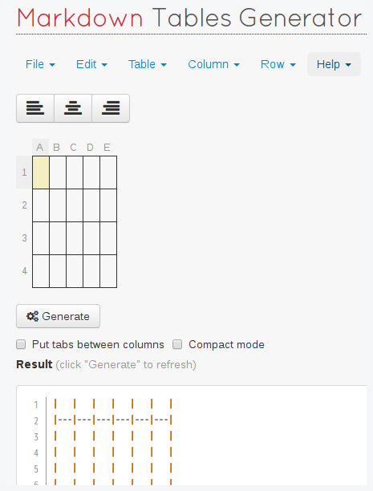

Markdown

Markdown is a lightweight markup language with plain text formatting syntax designed so that it can be converted to HTML and many other formats using a tool by the same name. Markdown is often used to format readme files, for writing messages in online discussion forums, and to create rich text using a plain text editor.[1]
Markdown[2]诞生于互联网时代，更是由深谙互联网文本之道的John Gruber等人设计，其语法受到text-to-HTML格式的影响，以简洁、简单为目的，最大程度的简化排版增强文字创作，作为程序员免不了要经常和Markdown打交道，所以笔者整理以下资料，语法介绍虽然占了大幅篇章，但主菜是收集的那些其他作者写的关于Markdown开源作品，闲暇时看看可以对正则匹配又有新的认知，受益无穷。
标题
Markdown 支持两种形式的标题语法：Setext形式和atx形式。
Setext
Setext形式的标题只能表示标题1和标题2这两阶。
| 符号 | 描述 | markdown | html |
|---|---|---|---|
| = | 最高阶标题 | 这是标题1 ============= |
这是标题1 |
| - | 第二阶标题 | 这是标题2 ------------- |
这是标题2 |
atx
atx形式的标题可以表示标题1~标题6共6阶。
| 符号 | 描述 | markdown | html |
|---|---|---|---|
| # | 最高阶标题 | # 这是标题1 | 这是标题1 |
| ## | 第二阶标题 | ## 这是标题2 | 这是标题2 |
| ### | 第三阶标题 | ### 这是标题3 | 这是标题3 |
| #### | 第四阶标题 | #### 这是标题4 | 这是标题4 |
| ##### | 第五阶标题 | ##### 这是标题5 | 这是标题5 |
| ###### | 第六阶标题 | ###### 这是标题6 | 这是标题6 |
区块引用
区块引用可以嵌套使用。
引用的区块内也可以使用其他的Markdown语法，包括标题、列表、代码块等。
分隔线
三个或以上的星号*、减号-、底线_来建立一个分隔线，标记之间允许存在空格，而且这三种标记可以混用。
| 符号 | markdown | html | 效果 |
|---|---|---|---|
| * | * | <hr/> | |
| * | * | <hr/> | |
| * | * | <hr/> | |
| - | - - - | <hr/> | |
| - | ----- | <hr/> | |
| _ | __ | <hr/> | |
| -*_ | -*_ | <hr/> |
强调
星号*和底线_，**和__两个相同的符号中间不能留有空白，且不允许混用。
| 符号 | markdown | html | 效果 |
|---|---|---|---|
| * | *使用一个星号的强调* | <em>使用一个星号的强调</em> | 使用一个星号的强调 |
| * | **使用两个星号的强调** | <strong>使用两个星号的强调</strong> | 使用两个星号的强调 |
| _ | _使用一个底线的强调_ | <em>使用一个底线的强调</em> | 使用一个底线的强调 |
| _ | __使用两个底线的强调__ | <strong>使用两个底线的强调</strong> | 使用两个底线的强调 |
列表
Markdown 支持有序列表和无序列表两种，且列表可以嵌套使用。
无序列表
有序列表
技巧
链接
Markdown的链接可分为自动链接和普通文本链接两种类型。
自动链接
Markdown支持以比较简短的自动链接形式来处理网址和电子邮件信箱。
| markdown代码 | html代码 | 描述 | 效果 |
|---|---|---|---|
| <http://kangcafe.com/> | <a href="http://www.kangcafe.net/"> http://www.kangcafe.net/</a> |
可点击的URL | http://kangcafe.com/ |
| <kang@kangcafe.com> | <a href="mailto:kang@kangcafe.com"> kang@kangcafe.com</a> |
可点击的Email | kang@kangcafe.com |
普通文本链接
Markdown支持两种形式的普通文本链接语法： 行内式和参考式两种形式。
行内式链接
| markdown代码 | html代码 | 效果 |
|---|---|---|
| [链接文字](链接URL '可选的链接title') | <a href="链接URL" title="可选的链接title" <链接文字>/a> |
链接文字 |
参考式链接
Markdown语法说明：
| markdown代码 | html代码 | 效果 |
|---|---|---|
| [链接文字][链接id] [链接id]: 真正的链接URL "可选的title" |
<a href="真正的链接URL" title="可选的title" <链接文字>/a> |
链接文字 |
表格
Tables Generator 表格生成器很好用，可以根据需求一键生成表格。

代码
LaTeX
Markdown与LaTeX[3]结合起来写作还没有尝试过，后续回补上，前年写毕业论文的时候做过一个LaTeX论文模板（latex-paper-template）。
R
Rmd
RStudio
画图
格式转换
Excel
命令行转换工具
Emoji表情
衍生规范
GFM
GFM(GitHub Flavored Markdown)
转移
\ 反斜线
` 反引号
* 星号
_ 底线
{} 花括号
[] 方括号
() 括弧
# 井号
+ 加号
- 减号
. 英文句点
! 惊叹号